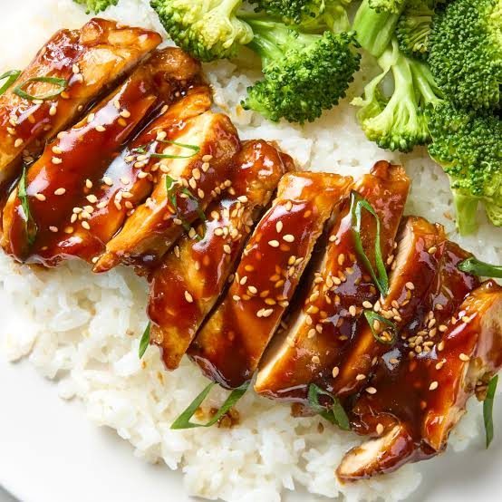

Home
Reicpe of Chicken Teriyaki

Chicken teriyaki is a popular Japanese-inspired dish featuring tender chicken coated in a sweet and savory sauce made from soy sauce, mirin, and sugar. It is commonly served with steamed white rice and garnished with green onions and sesame seeds.
Ingredients
- Chicken thighs or chicken breasts
- Soy sauce
- Mirin
- Sugar
- Garlic
- Ginger
- Vegetable oil
- Green onions
- Sesame seeds
- Cooked white rice
Steps
- Cut the chicken into bite-sized pieces.
- Mix soy sauce, mirin, sugar, garlic, and ginger to make the teriyaki sauce.
- Heat vegetable oil in a pan over medium-high heat.
- Add the chicken and cook until browned and fully cooked.
- Pour the teriyaki sauce into the pan and simmer until it thickens and coats the chicken.
- Remove the chicken from the heat and garnish with green onions and sesame seeds.
- Serve the chicken over cooked white rice.